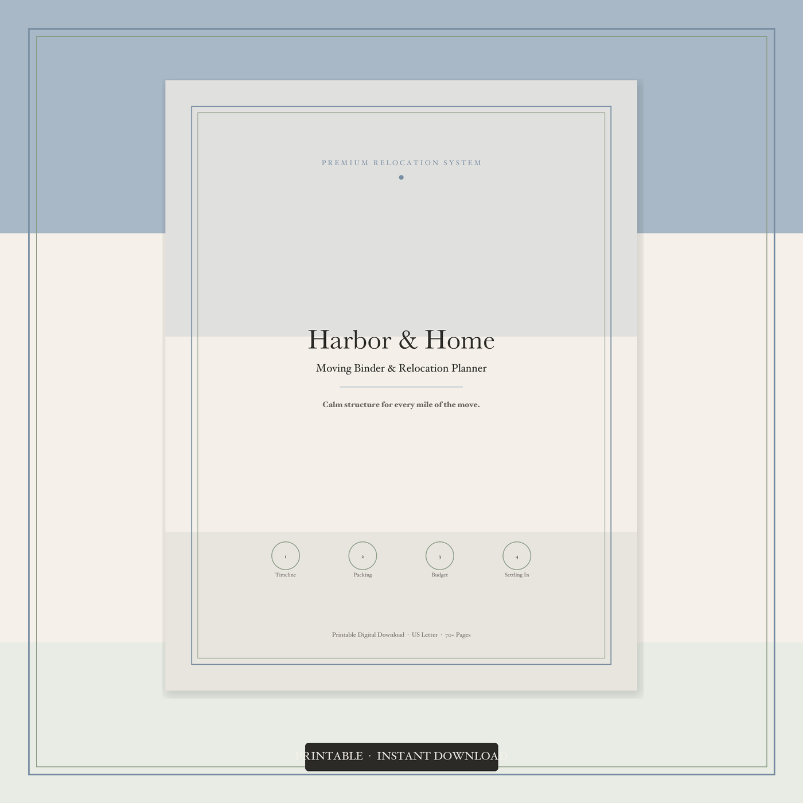
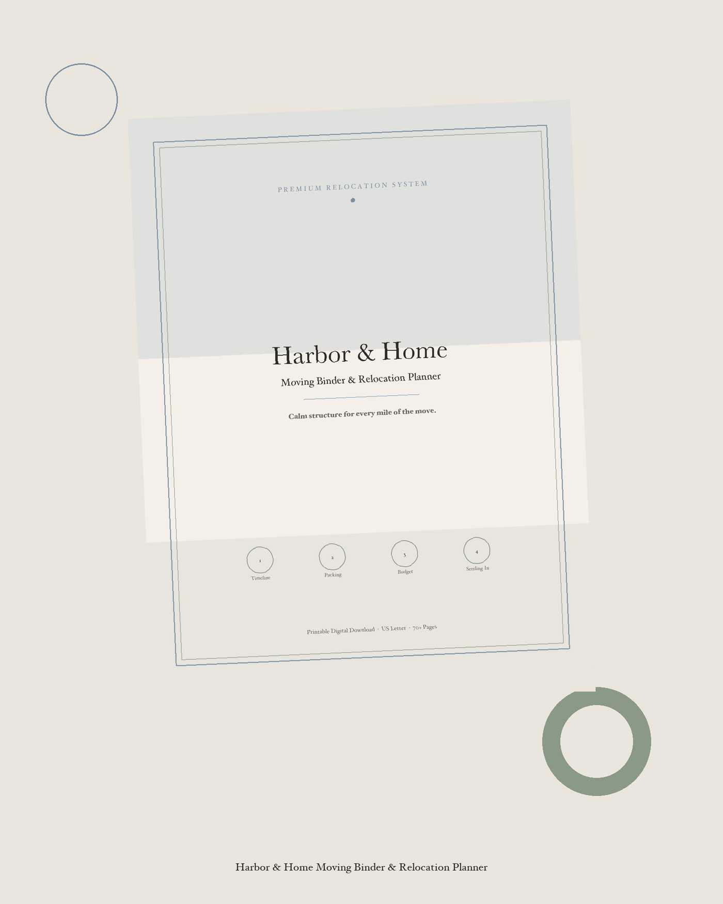
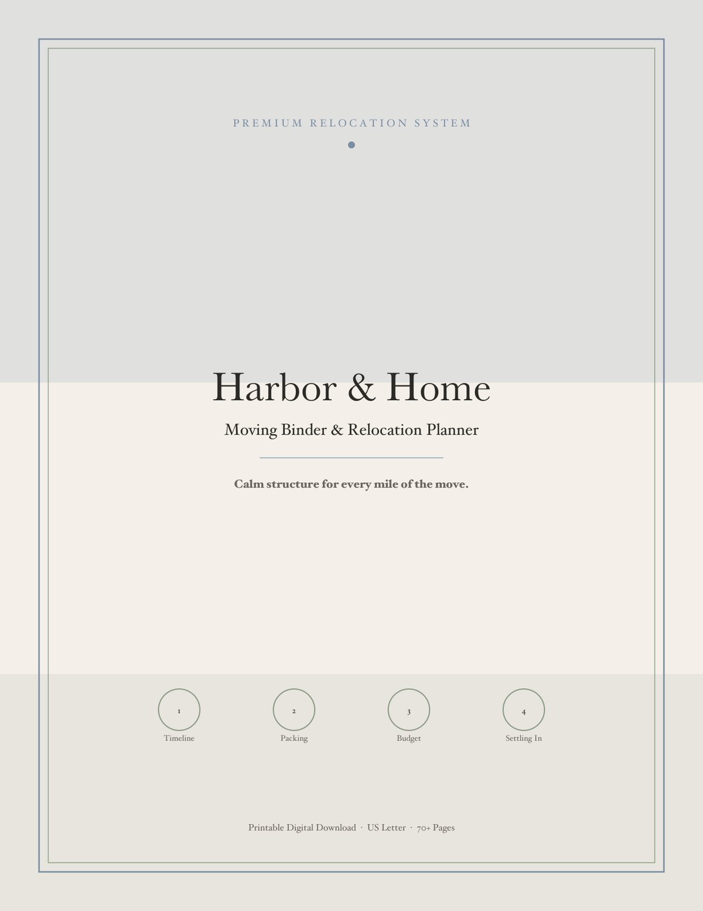
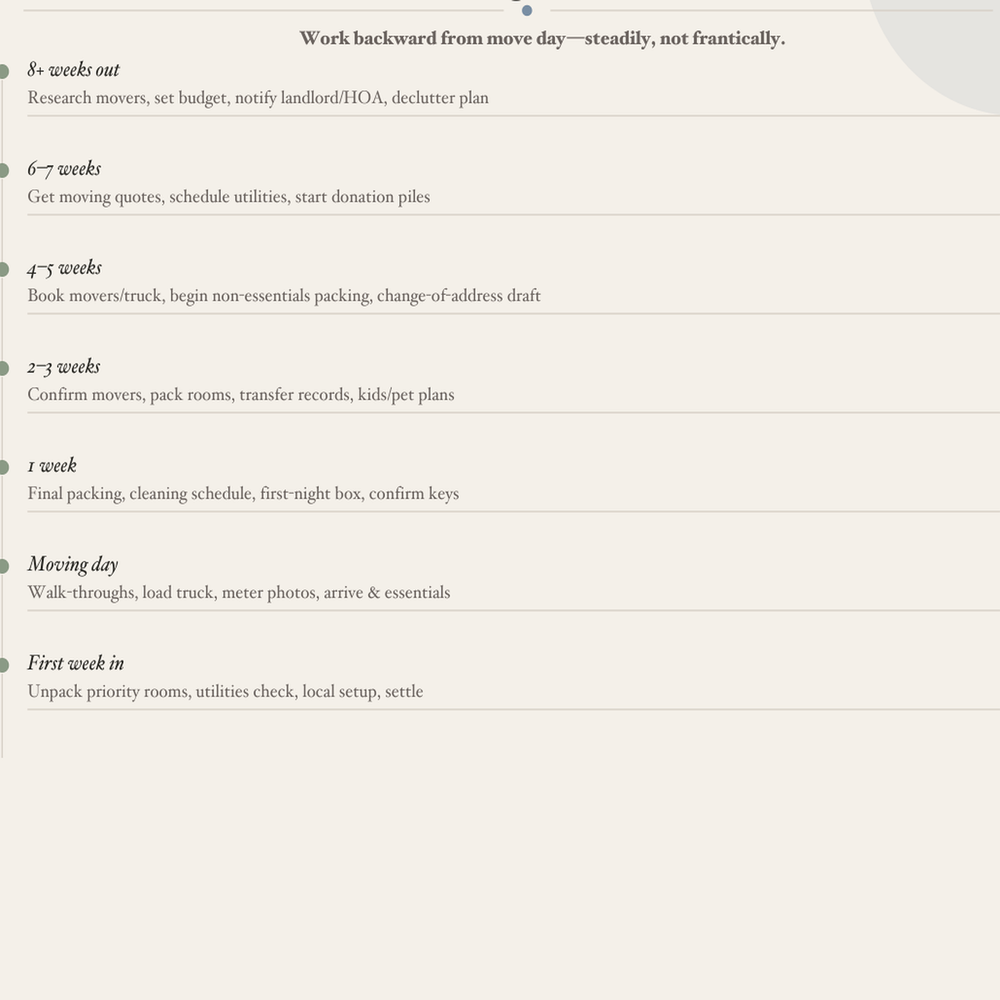

Projects / GH-X
GH-X Automation System
Connects product-ops stages through Airtable-centered queues and n8n automations. Each stage reads work items, performs transforms and/or AI/API calls, then writes status for downstream stages.
Business problem
Creating and publishing digital product assets involves many handoffs (ideas → copy → images → listings → social/video → measurement). Manual handoffs are easy to skip, hard to QA, and difficult to improve systematically.
My contribution
I independently designed and configured the GH-X automation definitions and queue-oriented process flow, including prompt/payload assembly patterns and multi-service orchestration across the pipeline stages below.
Pipeline architecture

Abstract systems diagram — not an implementable export. Individual workflow JSON is private-only.
Stage overview
- Ideation & Research — Create/recycle product and content ideas into queues
- Listing & Prompt Generation — Produce listing copy / design-reel prompts
- Visual Asset Generation — Generate images/mockups/product files; store references
- Commerce Publish — Validate queues; create draft listings via commerce APIs
- Social Scheduling — Build packs and schedule social posts
- Video Pipeline — Script → generate video → poll status → QA gate
- Performance Feedback — Write metric notes back for learning loops
- Reliability — Error alerts and failed-row requeue / review
Skills demonstrated
- AI Operations / workflow design
- Prompt & payload strategy (high-level)
- No-code automation (n8n)
- Queue/data planning (Airtable)
- API orchestration
- QA / failure handling mindset
- Process documentation
GH-X digital product output samples
Sample visuals from a Harbor & Home moving binder package produced through the GH-X product pipeline. These illustrate digital product output quality — not claims of marketplace sales volume or production traffic.




Current status
- System design: Functional Build
- Public screenshots of live automation runs: Evidence Pending
- Production Ready: No — not presented as proven production traffic